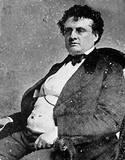
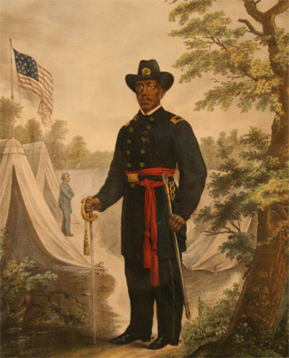

|
Believing that only white officers could bend former slaves to the demands of
military life and lead black soldiers into battle, the War Department refused to
commission blacks until late in the war and then only in very small numbers.'
For the most part, relations between officers and soldiers in the black
regiments followed the familiar pattern of American race relations: whites as
superiors and blacks as inferiors. Yet, even within this tired formula enormous
variation existed.
|

Massachusetts Governor John A. Andrew
|
The abolitionist proponents of black enlistment rejected notions of black
inferiority and sensed that the selection of officers of impeccable credentials
would at once silence critics and spur the success of black regiments.
Massachusetts Governor John A. Andrew recruited men of known abolitionist
principles to lead the 54th and 55th Massachusetts regiments, as did Kansas
Senator James H. Lane for his 1st Kansas Colored Volunteers. For similar reasons
and upon Andrew's recommendation, Edward A. Wild took command of the North
Carolina "African Brigade" which bore his name, and Thomas W. Higginson of
Massachusetts and James Montgomery of Kansas received commands in the South
Carolina Colored Volunteers, recruited by antislavery Generals David Hunter and
Rufus Saxton. The abolitionists who officered the early black regiments came
from a variety of backgrounds. Many had grown up in the war against slavery and
battled side by side with William Lloyd Garrison and Charles Sumner. Others,
like David Branson of Mississippi, had powerful unionist commitments and were
not easily intimidated by the sneers directed toward "nigger officers." Indeed,
such slander only intensified their sense of mission and their determination to
see the "experiment" succeed. Some, like Colonel Isaac F. Shepard, who had a
white soldier whipped for abusing his black troops, risked their careers to
protect their men. But rapid growth of black enlisted ranks, especially after
May 1863 when the War Department's Bureau of Colored Troops began operation,
outpaced the number of abolitionists available to officer black regiments.
Establishment of the bureau not only marked the wholesale expansion of black
recruitment but also constituted a minor revolution in the selection of Union
officers. On the assumption that authority to raise regiments conveyed the power
to appoint officers, state governors had regularly chosen officers for the
volunteer units raised in their states. The inauguration of recruitment by the
Bureau of Colored Troops placed the entire officer selection mechanism for black
regiments in the hands of the federal government. To secure officers readily,
the bureau offered to both white officers and white enlisted men the prospect of
promotion in rank if they accepted commissions in black regiments. But, in order
to ensure high quality in the new officer corps and guard against the dangers
inherent in a system that propelled privates to lieutenants, sergeants to
captains, and captains to colonels almost overnight, the bureau required that
prospective officers pass examinations before receiving appointments. In so
doing, the federal government closed the patronage route to commission in black
regiments.
In December 1863 the Supervisory Committee for Recruiting Colored Troops,
recognizing the critical need for qualified officers, established the Free
Military School in Philadelphia to prepare prospective officers for examination.
The directors of the school screened applicants closely, categorically excluding
"Such as are intemperate; such as seek the service for lack of a better
business; such as have been, while in the military service, frequently sick at
the hospital; and such as are proved to be ill whenever there is a hard march on
hand, or a battle in prospect." Thomas Webster, chairman of the Supervisory
Committee, proudly described the students as "enthusiastic in their views
regarding the duties of the colored race to the government in this war, and the
duties of the people and the government to this race." "A large proportion of
them," according to Webster, were "men of liberal education, culture and
excellent social position." The school operated entirely on the basis of
voluntary contributions and, hence, never enjoyed financial stability. After
exhausting its resources, it closed in September 1864. In its nine-month
existence, the Free Military School boasted 484 graduates who served as officers
in black regiments. Shortly after closing, the school, renamed the U.S. Military
School for Officers, re-opened on a tuition basis. The school survived through
the rest of the war, preparing officers for service with black troops and
providing a precedent for the training of officers outside the established
military academies.
The boards of examination intended that men knowledgeable in military tactics
and possessing the requisite personal qualities of officers should lead black
soldiers. However, the boards did not question prospective officers about either
their racial attitudes or their motives for volunteering with black troops, and,
as a consequence, officers differed widely in commitment to their work. Some
shared the antislavery vision of the early abolitionist officers and accepted
service with black troops as a challenge both to their adherence to the cause of
racial equality and to their beliefs in the inherent capabilities of former
slaves. Others cared little about black advancement or even emancipation and
instead sought only promotion and the pay and perquisites that attended higher
rank. Embarrassed by their affiliation with "nigger troops," many of these
officers viewed their speedy advancement as meager compensation for the stigma
of such association. They resented the difficulties associated with commending
former slaves and the added burdens of instruction and paperwork that resulted
from the ignorance of their men and especially from the shortage of literate
noncommissioned officers. A few slave owners even numbered among the new officer
corps. In sum, many officers carried the racial prejudices commonplace in
American society. While experience with black soldiers would modify the views of
most, some officers maintained active contempt for blacks throughout their term
of service.'
The diverse social views of the officer corps in the black regiments
guaranteed a wide range of treatment of enlisted men. Whereas some officers felt
a special sympathy for former slaves, on the assumption that the "law of
kindness" should replace the slave master's domination by force, others believed
an iron rule the only way to command men accustomed to the lash. At times, in
their zeal to impress black soldiers with the necessity of abiding by military
regulations, the strict disciplinarians ran roughshod over their men. Of course,
officers in white regiments often behaved no differently. Many officers of black
troops learned their habits of command while serving with whites and treated
their black subordinates no more harshly than they had their white ones.
Commissioned rank conferred enormous power, which any officer might abuse. But
racial contempt fueled the arbitrary use of authority and encouraged some white
officers to abuse black enlisted men. While only a minority beat their men,
bucked and gagged them, or tied them up by their thumbs, many more demeaned
black soldiers by demanding that they act as body servants and by ridiculing
their ignorance of military ways. The racial contempt implicit in such behavior
often stemmed from other than strictly malicious motives and manifested itself
in other ways. Well-meaning white officers who believed that blacks, fresh from
slavery, were less than adults, manifested a similar contempt when they
regularly intruded into the personal and social lives of their men.
|

Major Martin Delany of the 104th United States Colored Infantry.
|
Racist officers did not confine their contempt strictly to blacks in uniform
but expressed similar scorn for blacks in civilian garb. Taking little heed of
the family feelings of their men, they often treated soldiers' wives as
prostitutes. While black soldiers played the liberator's role, their officers
all too often showed greater sympathy for former masters. Such behavior imbued
black troops with distrust of their officers and magnified the ironies of
fighting a war for black freedom in the midst of pervasive racial prejudice.
While officers of antislavery lineage, alive to the special needs of former
slaves, attempted to instruct their men in the rudiments of reading and writing,
others took advantage of the soldiers' illiteracy and general ignorance of
military regulations. Payday provided just another opportunity for
conscienceless officers to separate the men from their money. At times, such
sharpers played the banker, taking money from black soldiers on promise of
depositing it for them and then swindling them out of their savings. At other
times, officers borrowed heavily from their men and later neglected to repay.
The War Department naturally frowned on such practices and routinely stopped the
pay of guilty officers awaiting discharge. Nonetheless, the department moved
slowly, and, when officers left service before soldiers lodged their complaints,
the soldiers had no alternative but to seek redress through civil action, an
uncertain undertaking at best. Even an occasional black officer borrowed from
his men without scruple of repayment.
All in all, white officers and black soldiers frequently held expectations of
each other that exceeded possible realization. Officers hoped to command men
eager to fight for freedom, to improve themselves morally and intellectually,
and to do credit to themselves and their race. But, in the uncertainty and
drudgery that characterized much of military life, soldiers often failed to meet
these standards. Similarly, black enlisted men expected officers to accord them
the dignity of soldiers and the rights of free men, to sympathize with the needs
of their families, to understand the difficulties posed by their recent
emergence from slavery and, if possible, to help them prepare for lives as free
men. But unsympathetic and incompetent officers grew demoralized and turned
their frustrations upon the soldiers, often treating them as little more than
brutes. The realities of military life frequently reinforced racial
preconceptions of both white officers and black enlisted men.
In a sense, relations between white officers and black enlisted men bore the
brunt of the earliest transition from slavery to freedom. Laboring under such a
heavy burden caused men on both sides to revert to familiar patterns of behavior
that, even while they offered psychological comfort, proved obsolete for dealing
with the new realities of freedom. The searing experience eventually wrought
changes in the racial perspective of both white officers and black soldiers.
Black soldiers discerned the differences between slave society and free society
as exemplified by military experience. Even though officers often wielded
greater power than slave masters, formal rules and higher authority
circumscribed the actions of military officers in ways that far exceeded the
power of antebellum civil officials to curb the prerogatives of slave owners.
Many blacks who entered the army calling every white man "boss" or "captain"
soon learned the distinctions in the rank of corporals, captains, and colonels
and the rights common soldiers had before each. They learned that in free
society they could appeal to higher authority for redress of grievances on a
scale utterly unthinkable under slavery. While military regulations sacrificed
some of the slave system's qualities of personal mediation of power (which could
intervene on the side of leniency as well as on the side of brutality), soldiers
recognized that in the army their more impersonal relationship to authority
rested on their being elevated to the status of persons themselves. Few
preferred slavery to freedom.
The crucible of war transformed white officers as well as black enlisted men.
If some officers in black regiments clung to their racial beliefs and saw them
sadly confirmed, most returned home after the war aglow with praise for their
men and skeptical of the neat stereotypes cast by nineteenth-century racist
ideology. Many who had reluctantly and disdainfully taken command of black
troops emerged as champions of the new order. Their own racial preconceptions
had crumbled when black soldiers fought as bravely as white soldiers and learned
to perform other soldierly duties on a par with whites. These officers helped
bolster the growing mood of racial tolerance in the North that black military
service itself had set in motion. Newly committed to the cause of racial
equality, they numbered prominently among the army officers who served with the
Freedmen's Bureau in the South after the war. Such officers represented both a
continuation and an expansion of the emancipation process from the army of
liberation to the freedpeople at large and to Northern whites as well.
Source: Freedmen and Southern Society Project, Freedom, A
Documentary History of Emancipation, 1861-1867 (New York: Cambridge
University Press, 1985), 406-11.
|